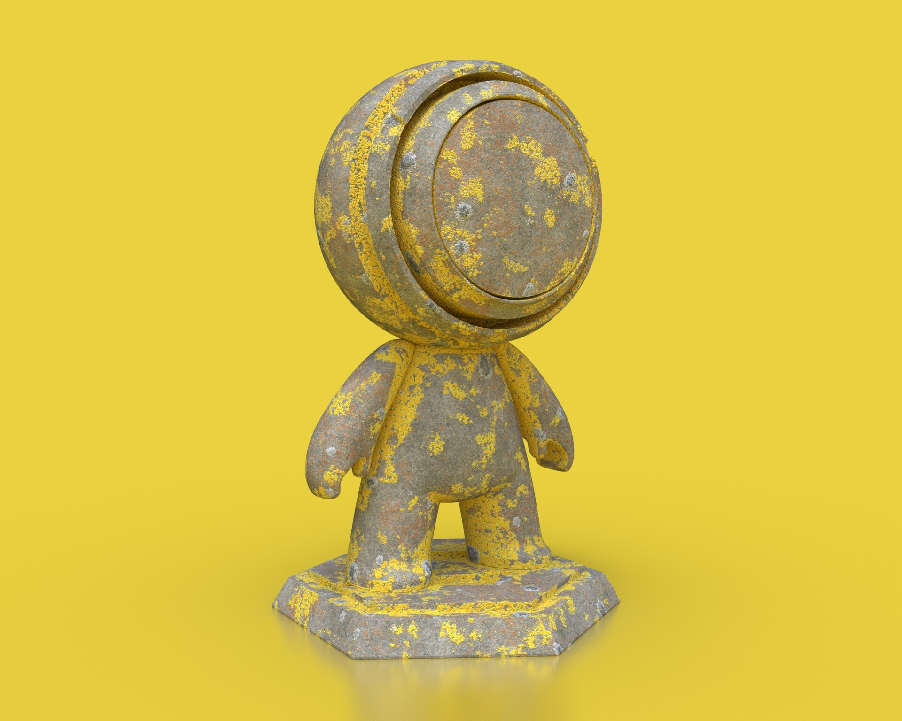
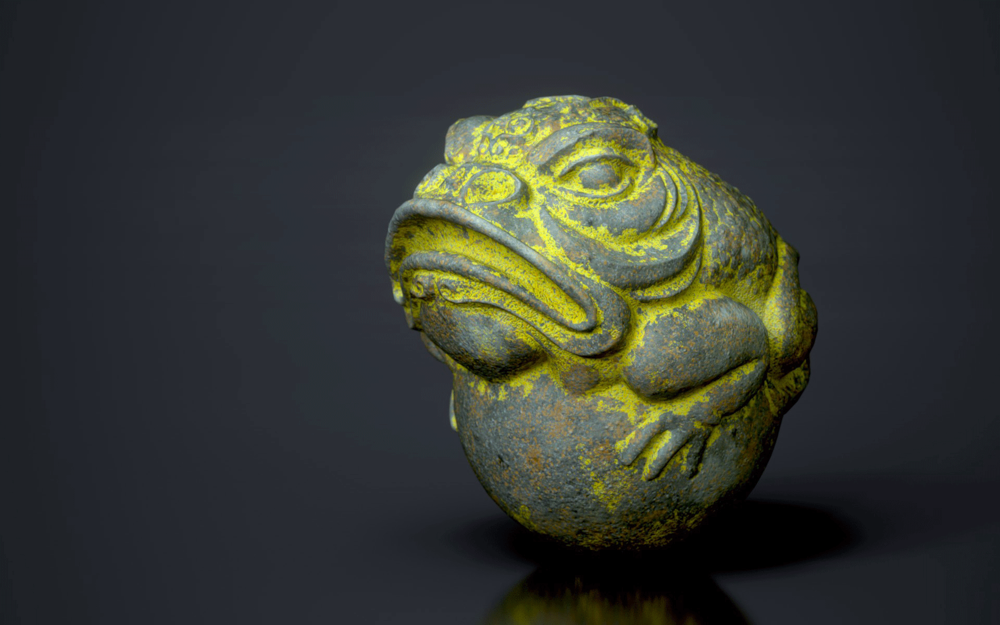
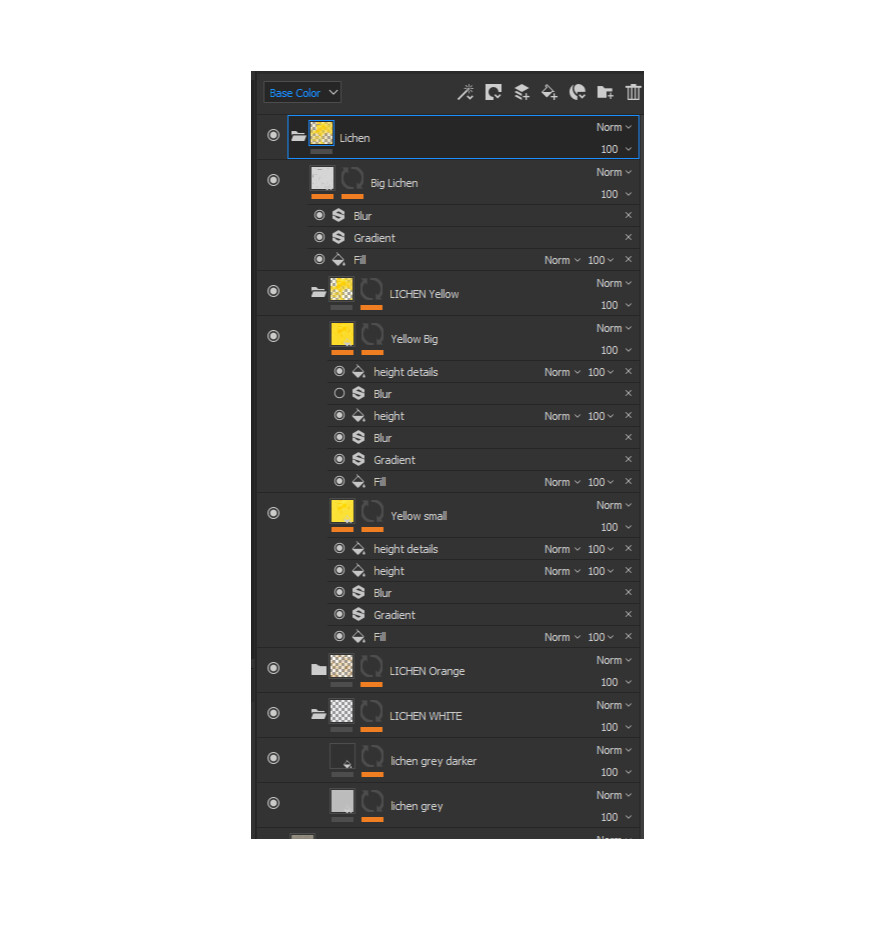

Lichen smartmaterial for Substance Painter (to use with the version above 2017.2).
https://substance3d.adobe.com/community-assets/assets/1b402fd83b5b41387c5712d40a649aaf247aa48d
Render made with Iray using SP samples models. Rock material not included. There are 4 different groups that correspond to 4 different lichen types. Each one has a mask with a fill layer to change the opacity.